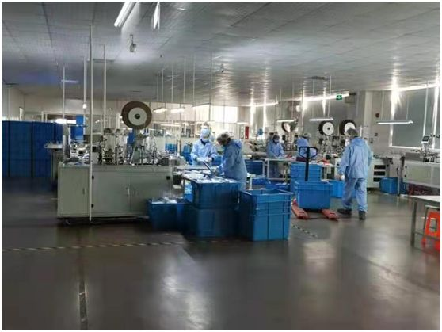
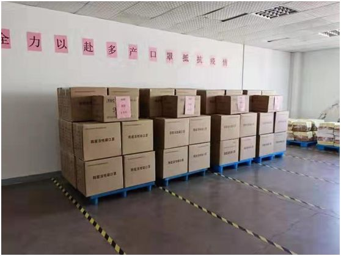
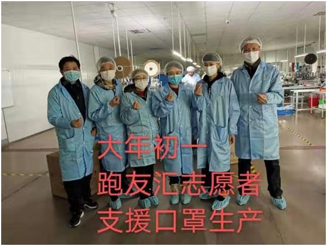

武汉一线送奶工：我们只能相互依靠
原文链接 备份链接 新冠肺炎疫情下的2020年农历新年，被封在武汉这座城内的不仅有当地市民，还有数以万计的外来务工人员。他们没有选择返乡，而是选择成为这座城市的坚守者，继续维持城市系统的运转。一边忙碌，一边观察，他们亲历着武汉或宏大或细微 …
我心想，先送给武汉的医院，武汉安全了全国就安全了；再送给各地的医院，医生安全了，我们就安全。要不然，我们戴了口罩也没用。
口述、图片 | 周朝恩
整理 | 王 嫱 方雨斌
我是80后宁波人，2003年SARS爆发那年，我正好从浙江大学计算机科学与技术学院本科毕业。当时SARS对我的影响并不大，而那一年我就在上海闵行找到一份和手机行业相关的工作。
我2009年创立了上海艾麒信息科技有限公司，主要做手机视频、录频和P图相关的App。其中，乐秀视频编辑器，已经在全球有了5亿用户。大学毕业17年来，我一直在上海工作生活，也在这里成家立业，老婆张力是个川妹子，也是学计算机的。可以说，闵行就像我俩的第二故乡。
武汉封城前，10万定金做口罩
按照惯例，我们公司工作到腊月二十九就放假了。1月22日腊月二十八那天，有同事向我这个总经理抱怨，说现在外面口罩很难买到。而就在2天前的1月20日，钟南山在电视里说武汉出现的新型冠状病毒肺炎存在人传人的现象，所以求生欲很强的小伙伴们到处开始买口罩。药店卖空了，电商不发货了……我想，在上海这样的国际大都市，买口罩都那么难，估计其他地方就更不容易了。
当天回到家，我就和老婆说起这事。我们俩越聊越觉得情况不太妙，应该做点什么。武汉宣布封城是第二天（1月23日）的事，我们在前一天晚上讨论时就担心当地口罩短缺，所以决定要找厂家订购一批口罩捐给武汉。
因为快过年了，大多数口罩生产厂都处于停产状态。我们公司所在的莘庄工业区莘闵留学生创业园，企服部的许华老师十分热心，帮忙介绍了在金山张堰镇工业区的升欣（上海）纺织品科技有限公司。这家公司的总经理原本就在犹豫，是否要过年加班生产口罩，但没有订单，他也不敢贸然留下工人。我马上打给对方10万元作为定金，订购30万只口罩。对方听到我们是要给医院送口罩，主动给了我们成本价。

1月24日大年三十那天，工厂开始加班加点生产口罩。

30万个口罩，捐给湖北和上海最需要的人
在工厂加紧生产的同时，我和老婆就根据网上的信息，给武汉的各个医院打电话。这年头铺天盖地的网上信息，未必都准确，我们就去找了武汉当地的同事朋友介绍，最终联系到位于武汉的湖北省中医院，和那里的赵主任对接口罩的事。

当时很多快递都停了，虽然一些快递公司有针对肺炎疫情的救援专线，但电话太忙打不进去，我们就干脆付了快递费直接发出去。1月25日大年初一，首批生产的40箱共8万只口罩从上海寄出。年初二，武汉的医生就用上了这批口罩。

这一次能够那么快发货，要感谢许多方面——升欣的老板所在的跑友汇，志愿者大年初一就来金山帮忙，大家都觉得这样过节更有意义。

还有武汉大学校友会的朋友、海外华侨等，也都做了好多。第一批口罩到武汉后，武汉的医生主动把荆门、黄冈、襄阳等地的医生介绍给我们，因为这些地区物资更加短缺。

随着1月26日（大年初二）升欣被上海市经信委征用产能，工厂没有余力再为我们生产口罩，所以我们手头的口罩如何分发就更加谨慎。

为了确保口罩都能送到最需要的地方，我和老婆一起筛选对接的医院和数量，微信里加了好多医院医生的群。都是认识的朋友介绍，或者医生介绍医生，了解了情况确实是急缺的，我们才发。发出去的口罩，我们都要跟进到收货，发货那几天每天都要忙到凌晨1点多。
我一开始一个医院发几万个，后来一万个一发，最后2000个一发。我一开始觉得30万个口罩挺多了，可很快就觉得不够捐了。
我听说上海本地医院口罩也有些紧张，就和老婆联系了位于闵行区的复旦大学附属闵行医院和上海市第五人民医院，分别送去1万只口罩。我们又听说在高速公路检查体温的工作人员也缺少口罩，又给上海市交通运输局送去了2000只。
这次过年我回过宁波老家一次，很快就回来了，大部分时间在上海，都在忙捐口罩这件事。其间，一些买不到口罩的亲戚朋友也来问我要口罩。我就直接告诉他们，我的口罩是工厂直接发给医院的，身边没有。我心想，先送给武汉的医院，武汉安全了全国就安全了；再送给各地的医院，医生安全了，我们就安全。要不然，我们戴了口罩也没用。
现在，30万只口罩都送出去了，我和老婆也终于可以安心过年了。
最后，我想再说一句：武汉加油！上海加油！中国加油！
征集令
《新民周刊》现面向全国征集新冠肺炎采访对象和真实故事：
如果你是参与抗击新冠肺炎疫情的医护人员或其家属，我们希望聆听你的“战疫”故事，也希望传达你的诉求。
如果你是确诊、疑似患者本人或家属，我们希望了解你和家人如何“抗疫”的过程，让外界了解你的真实经历。
如果你是疫情严重地区的普通市民，我们希望展现你的乐观，并倾听你所需的帮助。
如果你是公共服务人员或各类捐助者，我们希望看到你的“最美逆行”，记录下你的无私。
……
抗击新冠肺炎疫情，我们诚征对疫情了解的社会各界人士，提供相关线索，说出你的故事，让我们用新闻留存这一切。
《新民周刊》新冠肺炎线索征集值班编辑联系方式（添加时请简要自我介绍）：
周一：应 琛 微信号：paulineying0127
周二：金 姬 微信号：gepetta
周三：黄 祺 微信号：wxid_bf5mudid7oz322
周四：周 洁 微信号：asyouasyou
周五：孔冰欣 微信号：kbx875055141
周六：吴 雪 微信号：shyshine1105
周日：姜浩峰 微信号：jianggeladandong
新闻是历史的底稿，你们是历史的见证者。期待你的故事、你的线索！

▼
大家还都在看这些
▼
转载请在评论区留言，获得授权！
转载时，须注明作者、出处和微信号


原文链接 备份链接 新冠肺炎疫情下的2020年农历新年，被封在武汉这座城内的不仅有当地市民，还有数以万计的外来务工人员。他们没有选择返乡，而是选择成为这座城市的坚守者，继续维持城市系统的运转。一边忙碌，一边观察，他们亲历着武汉或宏大或细微 …
原文链接 备份链接 杨晨还在等通知。他在等待“十号令”带给他以及他的家庭命运的转机，他是一位“武汉病人”的家属。 让他有所期许的“十号令”，是2月2日发出的。按照“十号令”的要求，自通告发布之日起，对全市经发热门诊诊断有肺炎症状的发热病人 …
原文链接 备份链接 大家好，我是田静。 疫情爆发最严重的那几天，我家的亲戚被隔离了。 听到消息后家里人都吓得不轻。原来是亲戚小龙春节前去过武汉一晚，回来后就发烧、胸闷、呼吸困难，在老家农村，只能监管，不能诊治。 每天在家隔离，实时向当地村 …
原文链接 备份链接 和老高一样，我们都等待着这一天，作为一名在武汉打拼的普通市民，我爱这座城市，希望武汉好起来，希望我的故事能带给你们力量。 口述 | 陈 璇 整理 | 竹 里 我叫陈璇，今年48岁，湖北咸宁市嘉鱼县人，2013年，我和老 …
原文链接 备份链接 我住在汉口，是这次疫情的重灾区。那个被查出疫情源头的华南海鲜市场，就在火车站对面，离我家大概20公里。我希望疫情早日结束，对我们国家的经济影响小一些，所有人都能够平安和健康。 口述 | 小 玲 整理 | 沈 林 我叫小 …